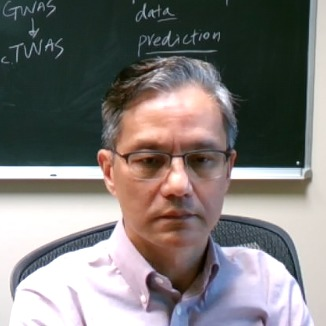

Our research lies at the interface of human genetics, computational statistics, and data science.
The Cai Lab develops computational and quantum-inspired methods to study how individual cells differ — and what those differences reveal about disease, development, and the structure of biological knowledge itself. The lab is moving from Texas A&M University to the University of Georgia in fall 2026.
- Develop algorithms and software for single-cell RNA-seq, scATAC-seq, and spatial transcriptomics data analysis.
- Apply quantum computing and machine learning to construct and analyze gene regulatory networks.
- Study phenotypic variability and disease mechanisms — including cancer, autism, and schizophrenia — at single-cell resolution.
News
Latest updates from the Cai Lab. Most recent first.
| Apr 13, 2026 | Shreyan receives the Dr. James E. Womack Award for the 2025–2026 academic year. |
| Apr 02, 2026 | Selim releases the preprint in arXiv QuantumXCT: Learning Interaction-Induced State Transformation in Cell-Cell Communication via Quantum Entanglement and Generative Modeling. Also read a Gist.Science report. |
| Apr 01, 2026 | Dr. Cai receives 2026 VMBS Outstanding Scientific Achievement Award. |
| Feb 12, 2026 | Dr. Cai gives guest lecture for ECEN 333 (At the Interface of Engineering and Life Sciences, organized by Dr. Raffaella Righetti) on "Single-Cell Transcriptomic Sequencing Data Analytics, Technologies and Applications," in ETB 1020 at 2:20 PM (the class runs from 2:20–3:35 PM). |
| Feb 11, 2026 | Dr. Cai and co-PIs (Drs. Chapkin, Ning and Chu) receives the Texas A&M University Targeted Proposal Teams (TPT) award by the Office of the Vice President for Research for developing "Quantum Algorithms and Agentic AI Systems for High-Performance Analysis of Single-Cell Omics Data." |
| Feb 11, 2026 | Shreyan receives the Advanced Training Grant ($1,500) by the VMBS Office of Research and Graduate Studies for travel to the Gordan Research Conference. |
| Feb 06, 2026 | Shreyan wins the platform presentation award at the Annual Research & Graduate Studies Trainee Research Symposium, CVMBS. |
| Jan 14, 2026 | Dr. Cai gives a talk titled "Quantum single-cell systems biology" at the PQE Follow-on and Quantum Biology workshop (IQSE Seminar Room, MPHY 578). |
| Nov 17, 2025 | Dr. Cai speaks at the 2025 GEAR-UP Forum at NCHU. |
| Oct 22, 2025 | Dr. Cai gives a talk titled "Advancing Cancer Research Through Single-Cell Data Science: Two Years of Progress and the Road Ahead" at the TREC Single Cell Data Science Facility Core Update Seminar, along with Dr. Yang Ni. |
| Oct 21, 2025 | scGEAToolApp appears in Windows Store View in Store. |
| Sep 19, 2025 | The Cai lab attends 2025 Texas Quantum Summit. |
| Sep 10, 2025 | Dr. Cai gives a talk to Quant A&M students in Peterson 119; 7-8pm Wednesday, September 10th. Title: Quantum Computing for Machine Learning: Promises, Challenges, and a Realistic Outlook. Details: Join us to discover how quantum computing could transform machine learning, what hurdles remain, and where the field is headed. A clear, no-hype introduction to one of today's most exciting frontiers hosted by Texas A&M's only Quantum Computing organization. |
| Sep 03, 2025 | Dr. Cai lab attends Texas A&M Quantum Initiative Event. |
| Aug 23, 2025 | News report on Vertex Article - Quantum Leap for Veterinary Science: Single-Cell Gene Networks Go Quantum. |
| Aug 15, 2025 | Shreyan starts a data science internship at Boehringer Ingelheim. |
| Jul 22, 2025 | Dr. Cai speaks at the UAAT (NTU)-CVMBSTAMU Bilateral Symposium at CVM. Title "Beyond differential expression: emerging methods in single-cell bioinformatics for neuroscience and infectious disease research." |
| Jul 02, 2025 | Dr. Cai joins as an affiliated member of the Institute for Quantum Science and Engineering (IQSE). |
| Jun 19, 2025 | Dr. Cai gives (NIH R25 Genome Research Experiences) PVAMU summer lab talk in the Department of Biology hosted by Dr. Asha Rao. |
| Jun 11, 2025 | Dr. Cai joins the Editorial Board of PLOS Genetics as an Academic Editor. |
| May 13, 2025 | Dr. Cai presents at AMO/IQSE seminar on quantum computing for single-cell biomedicine, hosted by the Institute for Quantum Science and Engineering (IQSE). |
| Apr 22, 2025 | Opening: PhD Position in Computational Biology and Quantum Computing. |
| Apr 17, 2025 | Dr. Cai speaks at the Spring 2025 TAMIDS SciML workshop. |
| Apr 14, 2025 | Technical achievements (MathWorks) - Texas A&M Conducts Single-Cell RNA Sequencing Data Analysis with MATLAB: Project Advances Quantum Computing Applications in Life Sciences. |
| Feb 14, 2025 | Story by Courtney Price, VMBS Marketing & Communications - Texas A&M Researcher Charts A New Direction In Biology, Quantum Computing. |
| Jan 19, 2025 | Shreyan tackled the *survivorship bias* problem in gene function research - Gene function revealed at the moment of sitochastic gene silencing (the typo in the title will be fixed soon:) |
| Jan 16, 2025 | CVM FY24 Annual Report and Faculty Spotlight: Dr. Cai. |
| Nov 13, 2024 | Dr. Cai speaks at the NTU-TAMU Bilateral Symposium in Taipei. |
| Nov 12, 2024 | Dr. Cai speaks at National Chung Hsing University in Taichung. |
| Nov 11, 2024 | Dr. Cai speaks at the 11th GEAR-UP Forum - Norman Borlaug Lecture Series in Taichung. |
| Nov 01, 2024 | VMBS TODAY // Fall 2024 - Quantum Leaps in Single-Cell Science (Story by Courtney Price). |
| Oct 12, 2024 | Selim speaks at the International Conference on Intelligent Biology and Medicine (ICIBM 2024) in Houston. Report: The TREC Single Cell Data Science Core Team working and presenting. |
| Oct 05, 2024 | Dr. Cai speaks at the 2024 Texas Taiwanese Biotechnology Association (TTBA) 10th Annual Symposium, TMC Innovation, Houston. |
| Sep 20, 2024 | Dr. Cai speaks at the McWilliams School of Biomedical Informatics in the Houston Texas Medical Center. |
| Sep 19, 2024 | Cristhian presents the quantum GRN model in the ECEGSA Graduate Student Seminar. |
| Sep 16, 2024 | Dr. Cai presents at the VTPB Seminar. |
| Aug 21, 2024 | Dr. Cai speaks at the ACS Fall 2024 Conference (Quantum Computing, AI & Quantum AI to Elevate Chemical Discoveries) in Denver, Colorado. |
| Jul 23, 2024 | Ms. Kailynn Weaver works in Cai lab as a summer student sponsored by the (NIH R25) PVAMU summber lab program - GREAT: Collaborative Genomics Initiative Between Prairie View A&M and Texas A&M University. NIH R25: Genome Research Experiences to Attract Talented Undergraduates into Genomic Fields to Enhance Diversity. |
| Jun 28, 2024 | Dr. Cai speaks at the ICSA 2024 China Conference in Wuhan, China. |
| Jun 07, 2024 | Dr. Cai speaks at the DNA Metabolism, Genomic Stability and Human Disease Conference in Suzhou, China. |
| May 28, 2024 | Dr. Cai speaks in the Department of Microbiology and in the School of Biomedical Sciences, University of Hong Kong. |
| May 23, 2024 | Dr. Cai speaks at the IDDST, Osaka, Japan. |
| Mar 21, 2024 | Dr. Cai speaks at the TAMIDS Machine Learning, AI, and Health Collaborations Workshop -- Unveiling the Cellular Universe: Where Machine Learning Meets Single-Cell Biology. |
| Mar 20, 2024 | Shreyan speaks at the Texas Single Cell (TXSC) Working Group Seminar -- Beyond Averages: Exploring the Individuality and Meaningful Chaos of Single-Cell Gene Expression. |
| Jan 11, 2024 | Dr. Cai participates as a panelist at the MathWorks Biomed Roundtable, discussing how computation is changing the life sciences. |
| Dec 11, 2023 | Dr. Cai speaks in the Seminar Series - Regional Center for Excellence in Cancer Research at TAMU. |
| Nov 20, 2023 | TAMU Today News -- Researchers Use Quantum Computing To Predict Gene Relationships. |
| Oct 18, 2023 | Cai lab is at the 2023 GCC Single-Cell Symposium. |
| Oct 13, 2023 | Dr. Cai speaks at the Distinguished Speaker Seminar in the Department of Electrical & Computer Engineering. |
| Sep 29, 2023 | Dr. Cai is interviewed on the YouTube channel NiklasOPF talking about quantum gene regulatory network. |
| Aug 25, 2023 | Shreyan receives TAMU Walter W. Lechner Estate Scholarship! |
| Jul 29, 2023 | Dr. Cai presents at ICML 2023 Workshop on Computational Biology. |
| Jul 24, 2023 | Shreyan presents his research to the SURGe students taking the GENE 657 Command Line Skills course and Professional Development Session #5: Bioinformatics in Genetics Research, on West Campus. |
| Jul 19, 2023 | Dr. Cai speaks at the International Conference on Intelligent Biology and Medicine (ICIBM 2023). |
| Jul 13, 2023 | Our latest research on "Quantum gene regulatory networks" has just been published in @Nature_NPJ Quantum Information. Read it here: https://rdcu.be/dgIpu. |
| Jul 12, 2023 | Yongjian starts doing internship at Moderna. |
| Jun 24, 2023 | Yongjian speaks at the Artificial Intelligence and Biomedicine Society (AI2Health). Check out the recording. |
| May 22, 2023 | Dr. Cai speaks at Texas A&M Cancer Research Symposium at The George in Century Square. |
| May 08, 2023 | Yongjian publishes Gene Knockout Inference (GenKI) at NAR. |
| Apr 16, 2023 | Yongjian attends RECOMB 2023, Istanbul, Turkey. Check out @RECOMBconf. |
| Mar 21, 2023 | Dr. Cai speaks at ASN 2023, Lexington, KY. Download full program book. |
| Feb 24, 2023 | The GENE Executive Committee approved VIBS 675: Single-cell Data Analysis via Machine Learning as a GENE elective. It is under the area of Statistics and Bioinformatics competency (https://genetics.tamu.edu/current-students/required-courses/). |
| Feb 18, 2023 | Dr. Cai speaks at the Texas Symposium on Critical Topics in Immunology, Texas A&M Hotel and Conference Center, College Station, Texas. View agenda. |
| Feb 15, 2023 | We are generously supported by the CPRIT RP230204 to create and run a single cell 'omics core. |
| Feb 01, 2023 | FOX 44 News: Grant to assist A&M researchers in developing cancer drug. |
| Jan 17, 2023 | Dr. Cai starts teaching VIBS675/689 - Single-Cell Data Analysis via Machine Learning. |
| Dec 19, 2022 | Yongjian publishes research article describing scTenifoldXct at Cell Systems. Visit his twitter thread. |
| Dec 01, 2022 | AgriLife E-Newsletter: $1.19 million grant will leverage single-cell sequencing technology. |
| Nov 08, 2022 | Yongjian speaks at the TAMIDS 2022 Scientific Machine Learning (SciML) Workshop. |
| Oct 26, 2022 | Yongjian and Dr. Cai presents at the 3rd GCC Single Cell Omics Symposium. More... |
| Oct 13, 2022 | Dr. Cai speaks at the Czech University of Life Sciences Prague (CZU) in Budova Tropického Zemědělství. |
| Oct 12, 2022 | Dr. Cai speaks at the ICSB 2022, Berlin, Germany. Final program is here. |
| Oct 04, 2022 | AgriLife E-Newsletter: AgriLife Research-led study examines nonalcoholic fatty liver disease. |
| Sep 27, 2022 | Dr. Cai speaks at the Single Cell Omics Data Workshop at BioScience Research Collaborative. More... |
| Aug 15, 2022 | Qian starts working as an intern in Johnson & Johnson. |
| Aug 09, 2022 | Yongjian speaks at the International Conference on Intelligent Biology and Medicine (ICIBM 2022) on "GenKI: a variational graph autoencoder based virtual knockout tool for gene function predictions via single-cell gene regulatory network." |
| Aug 02, 2022 | Yongjian receives the travel award provided by Texas A&M Institute of Data Science Graduate Travel Grants Program. Thanks, TAMIDS! |
| Jul 13, 2022 | Cristhian presents the quantum GRN model in the 2nd Cycle of International Conferences about hosted by Universidad Mayor de San Simon (Bolivia) and University of Cincinnati (USA). |
| Jul 12, 2022 | Cristhian presents the quantum GRN model in the seminar Experiences in Scientific Research Processes hosted by Universidad Nacional de Ingenieria (Peru). |
| Jun 30, 2022 | Quantum gene regulatory networks preprint is on. See also in arXiv:2206.15362 [cs.ET]. |
| Jun 17, 2022 | We are hiring! See PhD Position in Machine Learning and Single-Cell Biology. |
| Jun 06, 2022 | Qian starts first intern in Bristol Myers Squibb. |
| Jun 03, 2022 | Dr. Cai speaks at the Southeast Texas Evolutionary Genetics and Genomics (STEGG) 2022 Symposium. |
| May 17, 2022 | Qian wins the Flash Talk Award (1st Place) in the 2022 CVMBS Trainee Research Symposium. |
| May 11, 2022 | Dr. Cai speaks at FutureTox V, Chapel Hill, NC. |
| Apr 15, 2022 | Qian's article "Association of pyroptosis and severeness of COVID-19 as revealed by integrated single-cell transcriptome data analysis" published in ImmunoInformatics is online. |
| Apr 12, 2022 | Special Issue "Single-Cell Bioinformatics and Machine Learning" has been published in our open access journal Genes (ISSN 2073-4425). |
| Mar 01, 2022 | SCGEATOOL is online at https://scgeatool.github.io. |
| Feb 18, 2022 | Qian's article "scInTime: A Computational Method Leveraging Single-Cell Trajectory and Gene Regulatory Networks to Identify Master Regulators of Cellular Differentiation" is published in Genes as part of the Special Issue Single-Cell Bioinformatics and Machine Learning and is available online. |
| Feb 01, 2022 | scTenifoldKnk paper is online in Patterns. |
| Dec 09, 2021 | Dr. Cai speaks at TAMIDS Research Conference. |
| Nov 10, 2021 | Yongjian publishes at Cancer Prevention Research. |
| Oct 07, 2021 | Yongjian speaks at the 2nd Annual Gulf Coast Consortia (GCC) Single Cell Omics Cluster Symposium. |
| Jul 28, 2021 | Daniel's new tool rPanglaoDB is made public. |
| Apr 01, 2021 | Daniel will be joining the Kuijjer lab at University of Oslo as a postdoctoral fellow through the Marie Curie Scientia Fellows II program to work on regulatory network modeling in single-cell data. Here's a CVM News to learn more. |
| Mar 23, 2021 | Preprint "scTenifoldKnk: a machine learning workflow performing virtual knockout experiments on single-cell gene regulatory networks" is posted at BioRxiv. |
| Mar 08, 2021 | Dr. Cai presents at the 2021 Genetics and Epigenetics Cross-Cutting Research Team (GECCRT) Meeting. |
| Feb 04, 2021 | Daniel receives Marie Skłodowska-Curie Actions Postdoctoral Fellowship. How to apply? |
| Dec 10, 2020 | Dr. Cai speaks at the 3rd Workshop on Computational Advances for Single-Cell Omics Data Analysis (CASCODA 2020). |
| Dec 03, 2020 | Dr. Cai speaks at the 7th NCHU GEAR UP forum. |
| Nov 29, 2020 | Dr. Cai speaks at the 2020 TAMU-NCHU research forum. |
| Nov 05, 2020 | scTenifoldNet is published online in Patterns. |
| Oct 08, 2020 | Dr. Cai speaks at the 1st Annual Gulf Coast Consortia (GCC) Single Cell Omics Cluster Symposium. |
| Sep 25, 2020 | Dr. Cai speaks at EUSTM-2020 on COVID-19 - 7th Annual Congress of the European Society for Translational Medicine on Covid-19 (EUSTM-2020 21-25 September, 2020 (Virtual Congress). |
| Aug 25, 2020 | Daniel publishes on Bioinformatics. |
| Jul 19, 2020 | Preprint: Single-cell gene regulatory network analysis reveals potential mechanisms of action of antimalarials against SARS-CoV-2. [https://osf.io/va7ux/] [ResearchGate.] |
| Apr 14, 2020 | npj Schizophrenia paper published: Overdispersed gene expression in schizophrenia |
| Nov 01, 2019 | Dr. Cai speaks at The 20th International Conference on Systems Biology (ICSB2019). |
| Jun 04, 2019 | Opening for graduate student is available. |
| Apr 09, 2019 | Dr. Cai speaks at the 10x Genomics User Group meeting in Houston. |
| Mar 11, 2019 | We release three preprints: [bioRxiv 544163] [bioRxiv 548115] and [bioRxiv 574426]. |
| Oct 13, 2018 | Preprint 'Overdispersed gene expression characterizes schizophrenic brains' posted at BioRxiv. |
| Jul 08, 2018 | Dr. Cai attends SMBE18 in Yokohama. |
| Sep 25, 2017 | Ahmad publishes vQTL/vGWAS simulator at BMC Genomics. |
| Sep 01, 2017 | Welcome to new members of the team, Daniel and Ahmad! |
| Aug 15, 2017 | Guangzao, as lead author, publishes at Analyst. |
| Jul 06, 2017 | We attend SMBE17 in Austin. |
| Jun 09, 2017 | We are part of PoreCamp USA 2017. Read The Eagle report. |
| Jun 02, 2017 | We participate the 2nd Southeast Texas Evolutionary Genetics and Genomics (STEGG) Symposium at Texas A&M University at Galveston. |
| May 01, 2017 | Postdoc position is available immediately. |
| Apr 28, 2017 | Opening for graduate student is available. |
| Apr 27, 2017 | This new lab website is launched. Lab news on the old site is still accessible here. |
Research
We leverage the structure of knowledge to learn its interaction with the unknown. Current research focuses on understanding diverse behaviors of cells using machine learning, network theory, and quantum computation.
Quantum Gene Regulatory Networks
A quantum framework for inferring gene-gene interactions via entangled qubit states, published in npj Quantum Information (2023).
scTenifold Suite
Network construction (Net), virtual gene knockout (Knk), and cell-cell interaction prediction (Xct) for single-cell transcriptomes.
GenKI — Gene Knockout Inference
A variational graph autoencoder tool for predicting gene function via virtual knockout on single-cell regulatory networks. Published in Nucleic Acids Research.
scGEAToolbox
A comprehensive MATLAB toolbox for single-cell gene expression analysis including clustering, trajectory inference, and network construction. Available on the Microsoft Store.
Cell-to-Cell Variability
Exploring differentially variable genes and the genetic basis of expression heterogeneity across cells and individuals.
Disease Applications
Schizophrenia overdispersion, aberrant gene expression in cancer, hypertension & salt sensitivity — studied at single-cell resolution.
Join the Lab
The Cai Lab is moving to the University of Georgia in fall 2026. We are recruiting graduate students and postdocs at the interface of single-cell biology, machine learning, and quantum computing.
Contact Us- Romero S, Gupta S, Chapkin RS, Cai JJ. QuantumXCT: Learning Interaction-Induced State Transformation in Cell-Cell Communication via Quantum Entanglement and Generative Modeling. arXiv [Preprint]. 2026/04/09;(2604.02203). doi:10.48550/arXiv.2604.02203
- Gupta S, Romero S, Cai JJ. Mapping Gene Impact on Single-cell Transcriptomic Networks via Perturbation Response Scanning. bioRxiv [Preprint]. 2025 Dec 17:2025. doi: 10.64898/2025.12.15.694358. PMID: 41473321
- Romero S, Kumar VS, Chapkin RS, Cai JJ. Quantum Generative Modeling of Single-Cell transcriptomes: Capturing Gene-Gene and Cell-Cell Interactions. arXiv [Preprint]. 2025/12/19;(2510.12776). doi:10.48550/arXiv.2510.12776
- Romero S, Gupta S, Gatlin V, Chapkin RS, Cai JJ. Quantum annealing for enhanced feature selection in single-cell RNA sequencing data analysis. Quantum Mach Intell. 2025/12;7(2)114-. doi:10.1007/s42484-025-00312-1
- Gupta S, Chaudhuri A, Raghuraman V, Ni Y, Cai JJ. CONSTRUCTING GENE REGULATORY NETWORK USING CHATTERJEE'S RANK CORRELATION WITH SINGLE-CELL TRANSCRIPTOMIC DATA. bioRxiv [Preprint]. 2025 Sep 23:2025. doi: 10.1101/2025.09.17.676530. PMID: 41000795
- Zhong Y, Hou Y, Yang Y, Zheng X, Cai JJ. scPOEM: robust co-embedding of peaks and genes revealing peak-gene regulation. Bioinformatics. 2025 Sep 1;41(9):btaf483. doi: 10.1093/bioinformatics/btaf483. PMID: 40889281
- Gatlin V, Gupta S, Romero S, Chapkin RS, Cai JJ. Exploring cell-to-cell variability and functional insights through differentially variable gene analysis. NPJ Syst Biol Appl. 2025 Mar 20;11(1):29. doi: 10.1038/s41540-025-00507-z. PMID: 40113778
- Gupta S, Cai JJ. Gene function revealed at the moment of stochastic gene silencing. Commun Biol. 2025 Jan 19;8(1):88. doi: 10.1038/s42003-025-07530-0. PMID: 39828795
- Zhong Y, Cui S, Yang Y, Cai JJ. Controlled Noise: Evidence of epigenetic regulation of Single-Cell expression variability. Bioinformatics. 2024 Jul 17;40(7):btae457. doi: 10.1093/bioinformatics/btae457. PMID: 39018178
- Roman-Vicharra C, Cai JJ. Quantum gene regulatory networks. npj Quantum Inf. 2023/07/13;9(1)67-. doi:10.1038/s41534-023-00740-6
- Yang Y, Li G, Zhong Y, Xu Q, Chen BJ, Lin YT, Chapkin RS, Cai JJ. Gene knockout inference with variational graph autoencoder learning single-cell gene regulatory networks. Nucleic Acids Res. 2023 Jul 21;51(13):6578-6592. doi: 10.1093/nar/gkad450. PMID: 37246643
- Yang Y, Li G, Zhong Y, Xu Q, Lin YT, Roman-Vicharra C, Chapkin RS, Cai JJ. scTenifoldXct: A semi-supervised method for predicting cell-cell interactions and mapping cellular communication graphs. Cell Syst. 2023 Apr 19;14(4):302-311. doi: 10.1016/j.cels.2023.01.004. PMID: 36787742
- Osorio D, Zhong Y, Li G, Xu Q, Yang Y, Tian Y, Chapkin RS, Huang JZ, Cai JJ. scTenifoldKnk: An efficient virtual knockout tool for gene function predictions via single-cell gene regulatory network perturbation. Patterns (N Y). 2022 Feb 1;3(3):100434. doi: 10.1016/j.patter.2022.100434. PMID: 35510185
- Osorio D, Zhong Y, Li G, Huang JZ, Cai JJ. scTenifoldNet: A Machine Learning Workflow for Constructing and Comparing Transcriptome-wide Gene Regulatory Networks from Single-Cell Data. Patterns (N Y). 2020 Nov 5;1(9):100139. doi: 10.1016/j.patter.2020.100139. PMID: 33336197
- Osorio D, Yu X, Zhong Y, Li G, Yu P, Serpedin E, Huang JZ, Cai JJ. Single-Cell Expression Variability Implies Cell Function. Cells. 2019 Dec 19;9(1):14. doi: 10.3390/cells9010014. PMID: 31861624
- Cai JJ. scGEAToolbox: a Matlab toolbox for single-cell RNA sequencing data analysis. Bioinformatics. 2019 Nov 7:btz830. doi: 10.1093/bioinformatics/btz830. PMID: 31697351
- Zeng Y, Wang G, Yang E, Ji G, Brinkmeyer-Langford CL, Cai JJ. Aberrant gene expression in humans. PLoS Genet. 2015 Jan 24;11(1):e1004942. doi: 10.1371/journal.pgen.1004942. PMID: 25617623
- Wang G, Yang E, Brinkmeyer-Langford CL, Cai JJ. Additive, epistatic, and environmental effects through the lens of expression variability QTL in a twin cohort. Genetics. 2014 Feb;196(2):413-25. doi: 10.1534/genetics.113.157503. PMID: 24298061
- Hulse AM, Cai JJ. Genetic variants contribute to gene expression variability in humans. Genetics. 2013 Jan;193(1):95-108. doi: 10.1534/genetics.112.146779. PMID: 23150607

James J. Cai
Professor & Principal InvestigatorResearch at the interface of human genetics, computational statistics, and data science. Faculty of Genetics & Statistical Bioinformatics.
Past Members
- Victoria Gatlin — PhD · 2024
- Qian Xu — PhD → Bristol Myers Squibb
- Yongjian Yang — PhD → Moderna
- Daniel Osorio — Marie Curie Fellow · U. Oslo
- Cristhian Roman-Vicharra — PhD · ECEN
- Vishnuvasan Raghuraman — Data Scientist
Contact & Open Positions
The Cai Lab is moving to the University of Georgia in fall 2026. We are recruiting graduate students and postdocs at the interface of single-cell biology, machine learning, and quantum computing. Please email jcai@uga.edu with your CV and a brief note on your research interests.
Our Address
Department of Biochemistry and Molecular Biology
University of Georgia, Athens, GA 30602
Email Us
Call Us
+1 706 542 1334